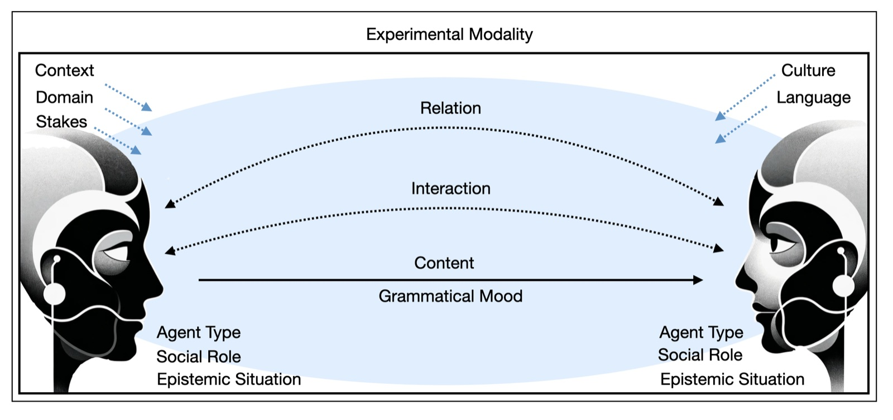

NIHAI
Norms of Assertion in Linguistic Human–AI Interaction. A four-country research consortium funded by HERA/CHANSE (2025–2028).
The problem
One of the central crises of our times is the widespread dissemination of mis- and disinformation, fake news and conspiracy theories, and the resulting erosion of trust in the media, science and governmental institutions. This communication crisis, as we call it, has been exacerbated by digital means of discourse. We predict that it will intensify further, because in the near future many of our interlocutors will no longer be humans but AI-driven conversational agents.
NIHAI is an in-depth, cross-cultural inquiry into responsible principles of operation for AI-driven conversational agents, with the aim of helping to mitigate or prevent a new, AI-fuelled wave of the communication crisis.
The research
The project sits at the interface of ethics, linguistics, media and communication studies, and social computer science. Across several European and non-European languages and cultures, it:
- explores normative expectations in language-based human–AI interaction;
- examines how people appraise violations of these norms, and the consequences for the interaction that follows;
- tracks relevant moderators, such as context, role, the model complexity of the AI system and the stakes, and mediators, such as perceived agency and the projection of mind;
- investigates how these factors influence the evaluation of conversational AI systems, and people’s disposition to rely on them, across cultures;
- proposes, on the basis of the findings, principles for the responsible design and use of AI-driven conversational agents. These are tested directly on Reporter, the AI-driven lay-journalism application of our associated partner Polaris News.


Partners and funding
Markus Kneer (project leader), University of Graz · Markus Christen (PI), University of Zurich · Mihaela Constantinescu (PI), University of Bucharest · Izabela Skoczeń (PI), Jagiellonian University, Kraków. Polaris News, led by the award-winning journalist Hannes Grassegger, is a key collaborator.
The project is funded with over one million euros by the HERA/CHANSE programme.
Further reading
- Norms of assertion in the US, Germany & JapanKneer · Proceedings of the National Academy of Sciences 118 (37), 2021
- The norm of assertion: Empirical dataKneer · Cognition 177, 2018
- Can a robot lie?Kneer · Cognitive Science 45 (10), 2021
- Guilty artificial minds: Folk attributions of mens rea and culpability to artificially intelligent agentsStuart & Kneer · Proceedings of the ACM on Human-Computer Interaction 5 (CSCW2), 2021
- Posting and reposting: The reputational costs of spreading false content onlineMarsili, Lana Blond & Kneer · Proceedings of the Cognitive Science Society, 2026